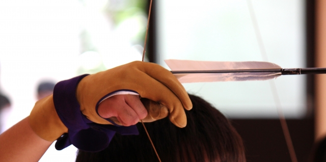
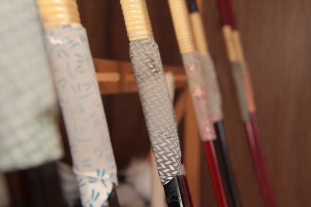
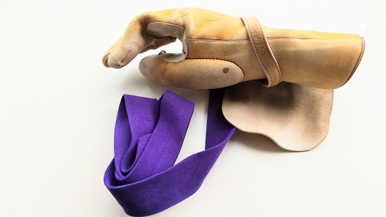
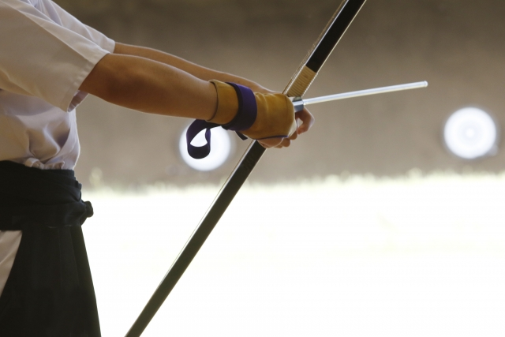

TRANSMISSIONS // SYSTEM LOG
更新のお知らせ LATEST TRANSMISSIONS
INDEX & DIRECTORY // 六箇所の案内
道場ポータル EXPLORE SECTIONS
01
// EDUCATION
初心者教室
初めての方も安心。弓道具の使い方・礼法から射法八節の基本まで丁寧にご案内します。
詳しく見る ➔

02
// CALENDAR
スケジュール
月間の道場稽古日、県連行事予定、中央審査会・全国大会の年間日程表。
日程を確認 ➔

03
// COMPETITIONS
大会・審査要項
令和8年度・7年度の大会実施要項、関東地域連合審査会案内、参加申込書等。
要項一覧 ➔

04
// HONORS
大会・審査成績
会員の段位認許・昇段審査合格速報、各種弓道大会における入賞・的中記録。
実績を見る ➔

05
// MEMBERS
会員専用
総会議事録、支部内連絡事項、大会出席簿・登録手続きのご案内。
ポータルへ ➔

06
// CONTACT & ACCESS
お問い合わせ
稽古見学のお申し込み、入門相談、弓道場へのアクセス情報・フォーム。
連絡する ➔
DOJO SPECIFICATIONS // 活動概要
道場スペック CLUB SPECIFICATION
AFFILIATION
茨城県弓道連盟 龍ヶ崎支部
DOJO FACILITY
龍ヶ崎中学校 弓道場 (近的28m)
PRACTICE DAYS
毎週 火・木・土 & 第1/3日曜
ADMISSION & VISIT
見学・入門 随時受付中